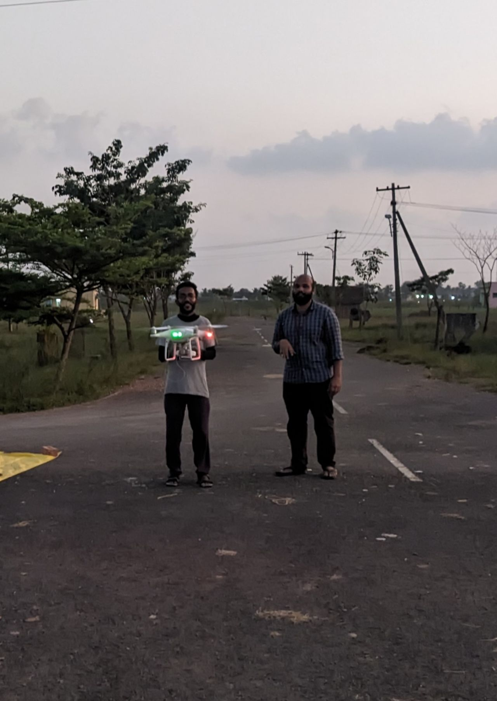
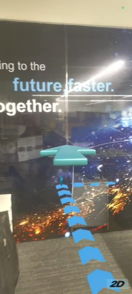
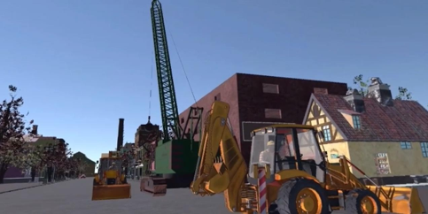

Our Work
Featured Projects
Real-world engagements across climate, disaster response, and immersive technology.
Climate · Flagship

State Government · Disaster Risk
State-Scale Flood Inundation Modelling — Meghalaya
Comprehensive flood risk assessment covering the entire state of Meghalaya using multi-source satellite data. Integrated Sentinel-1 SAR imagery for flood extent mapping, SRTM/ALOS DEM for terrain analysis, and hydrological modelling to delineate high-risk zones across river basins. Outputs included inundation depth maps, flood frequency zoning, and actionable risk layers for disaster management authorities.
UAV · Emergency Response

Bajaj Allianz · Insurance
UAV Flood Survey — 2023 Chennai Floods
Rapid deployment UAV mapping for post-flood damage assessment. Delivered high-resolution orthomosaics and 3D models enabling the client to quantify inundated areas and assess asset damage for insurance claims.
Climate · Research

Research · Routledge India
Urban Air Pollution Mapping — Google Earth Engine
Mapped and analyzed spatial distribution of air pollution across Thiruvananthapuram city using Sentinel-5P and MODIS aerosol products on GEE. Identified seasonal hotspots and published findings in Routledge India's volume on disaster risk and resilient agriculture.
XR · Enterprise

LTI Mindtree · Enterprise
AR-based Indoor Navigation System
Developed an AR indoor navigation module using Unity as Library for seamless Android & iOS integration. Deployed for enterprise campus navigation with real-time spatial overlay.
XR · Research · ISPRS

ISPRS 2024 · Perth, Australia
VR Tool for 3D Model Accuracy Assessment
Patented system for measuring and editing 3D spatial vector data inside a VR environment. Presented at ISPRS TC IV Symposium 2024 (TIF Grant Awardee) — enabling immersive quality assessment of photogrammetric reconstructions.